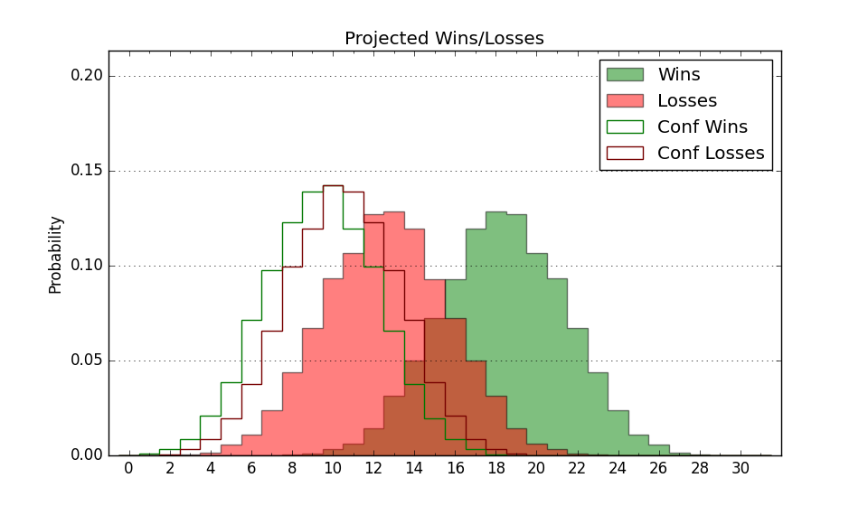

| Home | Game Probabilities | Conferences | Preseason Predictions | Odds Charts | NCAA Tournament |
| City: | Lubbock, Texas | |
| Conference: | Big 12 (1st)
| |
| Record: | 0-0 (Conf) 5-1 (Overall) | |
| Ratings: | Comp.: 18.1 (37th) Net: 16.3 (63rd) Off: 120.8 (25th) Def: 104.5 (174th) SoR: 21.0 (99th) |
| Remaining | ||||||
|---|---|---|---|---|---|---|
| Date | Opponent | Win Prob | Pred. | |||
| 11/29 | Northern Colorado (128) | 89.7% | W 86-71 | |||
| 12/4 | DePaul (75) | 78.4% | W 79-70 | |||
| 12/8 | (N) Texas A&M (16) | 30.3% | L 72-78 | |||
| 12/16 | Oral Roberts (271) | 96.9% | W 90-66 | |||
| 12/21 | Lamar (257) | 96.4% | W 88-65 | |||
| 12/31 | UCF (69) | 76.3% | W 77-69 | |||
| 1/4 | @ Utah (64) | 46.3% | L 78-79 | |||
| 1/7 | @ BYU (40) | 35.9% | L 77-81 | |||
| 1/11 | Iowa St. (17) | 44.8% | L 71-72 | |||
| 1/14 | @ Kansas St. (98) | 63.1% | W 76-72 | |||
| 1/18 | Arizona (15) | 44.0% | L 78-79 | |||
| 1/21 | @ Cincinnati (10) | 15.7% | L 68-79 | |||
| 1/26 | Oklahoma St. (80) | 80.8% | W 80-70 | |||
| 1/29 | TCU (62) | 74.1% | W 79-72 | |||
| 2/1 | @ Houston (2) | 7.0% | L 61-77 | |||
| 2/4 | Baylor (8) | 36.0% | L 76-80 | |||
| 2/8 | @ Arizona (15) | 18.7% | L 73-84 | |||
| 2/12 | Arizona St. (53) | 69.7% | W 77-71 | |||
| 2/15 | @ Oklahoma St. (80) | 55.3% | W 76-74 | |||
| 2/18 | @ TCU (62) | 45.6% | L 75-76 | |||
| 2/22 | West Virginia (54) | 70.0% | W 80-75 | |||
| 2/24 | Houston (2) | 20.5% | L 65-73 | |||
| 3/1 | @ Kansas (14) | 18.3% | L 71-81 | |||
| 3/5 | Colorado (82) | 81.3% | W 79-69 | |||
| 3/8 | @ Arizona St. (53) | 40.3% | L 73-75 | |||
| Previous | Game Score | |||||
| Date | Opponent | Win Prob | Result | Off | Def | Net |
| 11/5 | Bethune Cookman (317) | 97.9% | W 94-61 | 12.8 | -0.9 | 11.9 |
| 11/8 | Northwestern St. (306) | 97.7% | W 86-65 | -4.2 | -6.1 | -10.3 |
| 11/13 | Wyoming (202) | 94.1% | W 96-49 | 13.9 | 27.4 | 41.4 |
| 11/18 | Arkansas Pine Bluff (356) | 98.9% | W 98-64 | -7.2 | -13.6 | -20.7 |
| 11/21 | (N) Saint Joseph's (136) | 83.8% | L 77-78 | -6.1 | -8.9 | -15.0 |
| 11/22 | (N) Syracuse (89) | 72.6% | W 79-74 | 2.3 | 0.3 | 2.6 |
| Stats & Trends | |||||
|---|---|---|---|---|---|
| Current | Day | Week | Month | Season | |
| Composite | 18.1 | +0.2 | -7.0 | -1.8 | -1.8 |
| Comp Rank | 37 | +1 | -23 | -11 | -11 |
| Net Efficiency | 16.3 | +0.4 | -30.2 | -- | -- |
| Net Rank | 63 | -- | -58 | -- | -- |
| Off Efficiency | 120.8 | +0.1 | -12.8 | -- | -- |
| Off Rank | 25 | -- | -20 | -- | -- |
| Def Efficiency | 104.5 | +0.3 | -17.4 | -- | -- |
| Def Rank | 174 | +12 | -147 | -- | -- |
| SoS Rank | 325 | -5 | +12 | -- | -- |
| Exp. Wins | 18.3 | -0.1 | -2.8 | -0.5 | -0.5 |
| Exp. Conf Wins | 9.5 | -0.0 | -2.6 | -0.7 | -0.7 |
| Conf Champ Prob | 0.9 | -0.1 | -5.7 | -1.4 | -1.4 |

| Advanced Stats | ||
|---|---|---|
| Stat | Value | Rank |
| Off Eff FG % | 0.608 | 17 |
| Off Ast Ratio | 0.195 | 12 |
| Off ORB% | 0.397 | 17 |
| Off TO Rate | 0.151 | 184 |
| Off FT Ratio | 0.272 | 296 |
| Def Eff FG % | 0.508 | 190 |
| Def Ast Ratio | 0.126 | 94 |
| Def ORB% | 0.235 | 61 |
| Def TO Rate | 0.170 | 97 |
| Def FT Ratio | 0.404 | 263 |